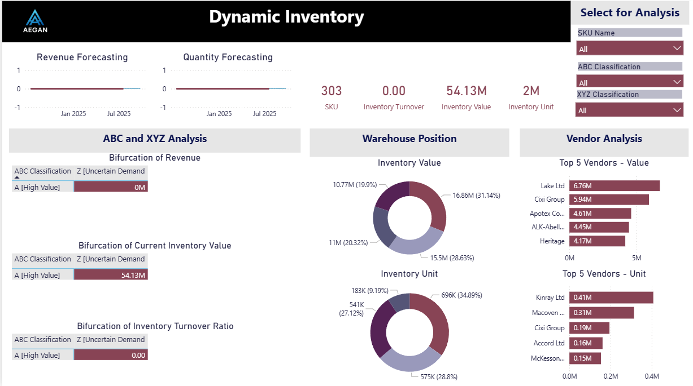
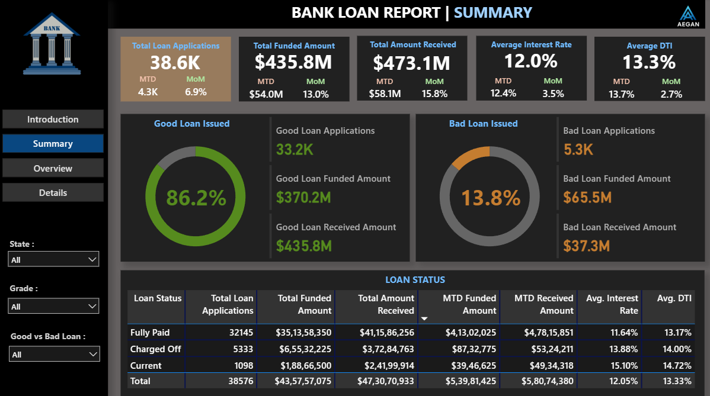
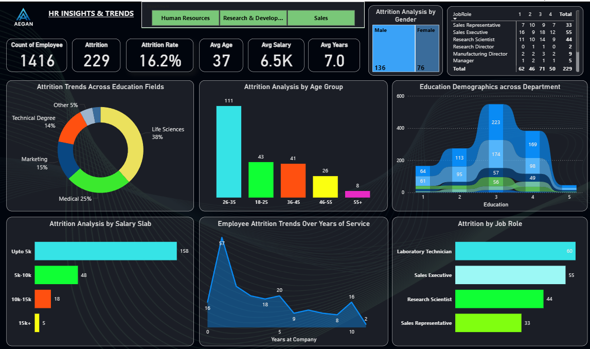
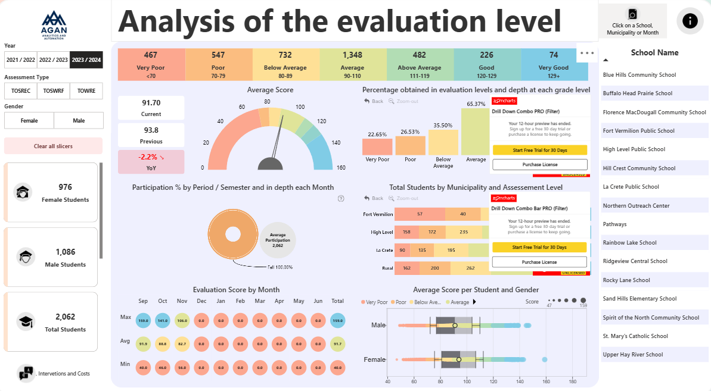

My Projects
Inventory Dashboard
Real-time tracking of inventory levels, turnover, and stock value with vendor-wise segmentation.
Loan Portfolio Tracker
Summarizes loan status, funding trends, and financial health indicators across customer segments.
HR Analytics Dashboard
Highlights attrition, salary analysis, and department-wise breakdowns to empower HR decisions.
Supply Chain Analytics

Visualizes end-to-end product flow from procurement to delivery across multiple sales channels.
Crypto Market Insights

Monitors crypto prices, trends, and volatility using time-based visualizations for investors.
Student Evaluation Analysis
Tracks student performance across gender, period, and assessment level to improve learning impact.